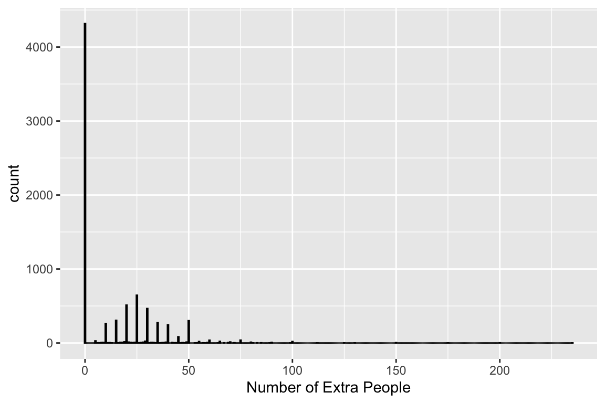
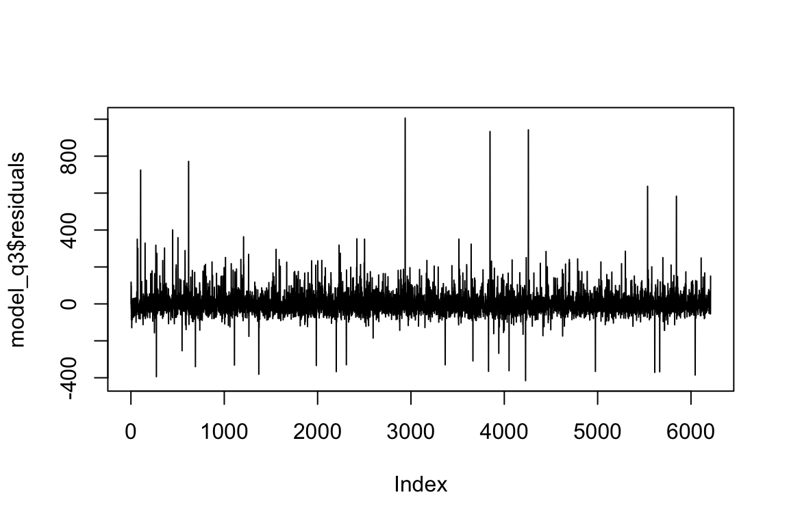
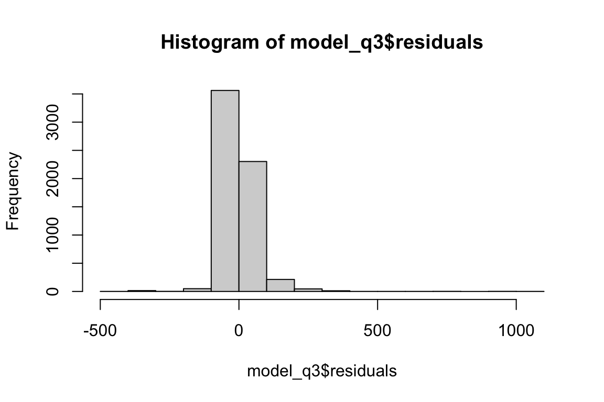
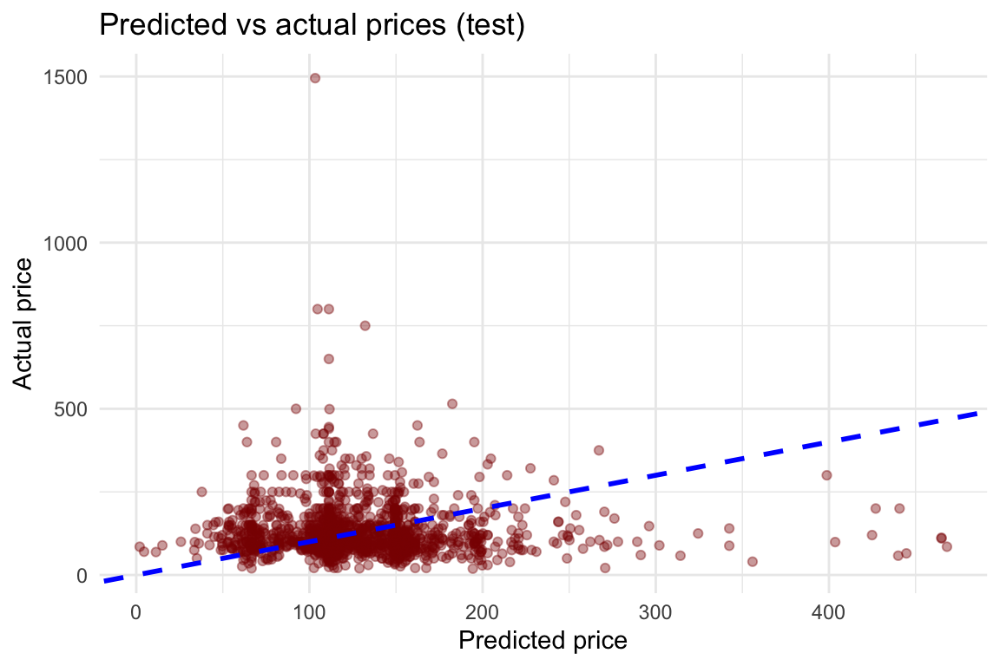

library(readr)
library(dplyr)
library(ggplot2)
library(psych)
library(tidyr)
library(Hmisc)
library(corrr)
library(ggpubr)
library(pheatmap)
library(forcats)
library(rsample)PR2-Solution
1 Introducing the page
Hello and welcome. This page is written as a solution by Yekta Amirkhalili. I am PhD candidate at the University of Waterloo, department of Managment Science and Engineering. In Spring 2025, I was a lecturer for MSE 253 - Probability and Statistics 2. This is my students’ final term project. I thought it would be useful to provide a solution manual.
All text in blue is written by me as the instructor as answer/explanation to the question. The question body is in black. The main point of this document is to be used for learning. It’s not really a portfolio project example, the focus really is to teach. Feel free to try and solve the questions on your own and check with my answers. I hope this is useful and you learn from it. I’ve also included a section to show you how I would use AI (chatGPT in this case) for coding or data analysis questions. Always cite it when you use it, and make sure its answer actually make sense! The code is written in R.
1.1 Mini-Project 1: Hypothesis Testing [30p]
The following R libraries are used:
1.1.1 Proportion Test
A survey finds that 60% of users prefer using mobile apps over desktop websites for booking appointments. Your company believes the proportion is different in your city. Use the PRJ2_MP1_PT.csv dataset to test whether the local preference differs from the national figure.
I will use a one-sample z-test for proportions to test the hypothesis.
Summarizing question’s information:
- proportion of users who prefer apps over desktop websites is 60/100.
- I have data from my city.
- Is the proportion I have in my city different from the 60% national figure?
Mathamtically, that is:
\[ H_0: p = 0.6 \] vs \[ H_a: p \neq 0.6 \] Where \(p\) is the proportion of users in my city who prefer apps over desktop websites. Since significance level is not given, I will use the default of 0.05. The test statistic is calculated as follows: \[ z = \frac{\hat{p} - p_0}{\sqrt{\frac{p_0(1 - p_0)}{n}}} \] where \(\hat{p}\) is the sample proportion, \(p_0\) is the population proportion, and \(n\) is the sample size. The critical region for a two-tailed test at the 0.05 significance level is \(|z| > z_{\alpha/2} = 1.96\). Chapter 10, Example 10.9 and 10.10 would be helpful.
df1 <- read_csv("data/PRJ2_MP1_PT.csv")
head(df1)# A tibble: 6 × 2
USER_ID Preference
<dbl> <chr>
1 1 Mobile App
2 2 Desktop App
3 3 Mobile App
4 4 Desktop App
5 5 Desktop App
6 6 Mobile App Let’s summarize the data to see how many of each we have:
df1 %>%
group_by(Preference) %>%
count(Preference) %>%
arrange(desc(n))# A tibble: 2 × 2
# Groups: Preference [2]
Preference n
<chr> <int>
1 Mobile App 782
2 Desktop App 718Add proportion to this:
df1 %>%
group_by(Preference) %>%
count(Preference) %>%
ungroup() %>%
mutate(Proportion = n / sum(n)) %>%
arrange(desc(n))# A tibble: 2 × 3
Preference n Proportion
<chr> <int> <dbl>
1 Mobile App 782 0.521
2 Desktop App 718 0.479Already looks kind of close to 60%, but also not really depending on who you ask (52%) - so which is it? You can either calculate the z value and compare it to the critical value, or use the prop.test function in R. This test takes in the number of successes (in this case, the number of users who prefer mobile apps), the total number of observations, the hypothesized proportion, and the alternative hypothesis’s one tailed or two-tailedness.
prop.test(
x = sum(df1$Preference == "Mobile App"),
n = nrow(df1),
p = 0.60,
alternative = "two.sided",
correct = FALSE # optional
)
1-sample proportions test without continuity correction
data: sum(df1$Preference == "Mobile App") out of nrow(df1), null probability 0.6
X-squared = 38.678, df = 1, p-value = 4.999e-10
alternative hypothesis: true p is not equal to 0.6
95 percent confidence interval:
0.4960311 0.5465266
sample estimates:
p
0.5213333 The p-value is quite small, so we reject the null hypothesis. The null hypothesis was that the proportion of users who prefer mobile apps is 60%, and we found that it is significantly different from this value. The 95% confidence interval for the proportion of users who prefer mobile apps is (0.42, 0.54), which does not include 0.6.
1.1.2 Difference in Means
Two customer service strategies were implemented in your company. The customer satisfaction scores are collected and saved in PRJ2_MP1_DM.csv. Test whether the mean satisfaction differs significantly between the two strategies.
I will use a two-sample t-test to test the difference in means between the two customer service strategies. The hypotheses are as follows: \[ H_0: \mu_1 - \mu_2 = 0 \] vs \[ H_a: \mu_1 - \mu_2 \neq 0 \] Where \(\mu_1\) is the mean satisfaction score for strategy 1 and \(\mu_2\) is the mean satisfaction score for strategy 2. The significance level is not given, so I will use the default of 0.05. The test statistic is calculated based on chapter 10.5 of Walpole book.
Let’s first look at the data and see the difference between the two strategies.
df2 <- read_csv("data/PRJ2_MP1_DM.csv")
glimpse(df2)Rows: 1,500
Columns: 3
$ ...1 <dbl> 1, 2, 3, 4, 5, 6, 7, 8, 9, 10, 11, 12, 13, 14, 15, 16, 17, 1…
$ strategy1 <dbl> 58.533, 56.791, 59.118, 52.179, 59.108, 51.463, 56.945, 58.4…
$ strategy2 <dbl> 88.491, 89.114, 89.632, 74.994, 89.769, 90.928, 93.512, 95.8…df2 %>% dplyr::summarize(
stg1_mean = mean(strategy1, na.rm = TRUE),
stg2_mean = mean(strategy2, na.rm = TRUE)
)# A tibble: 1 × 2
stg1_mean stg2_mean
<dbl> <dbl>
1 57.0 88.0It seems that the mean satisfaction score for strategy 1 is much lower than for strategy 2. But, is it significantly different? Let’s see the tests for the cases where:
- Variances are known or unknown and equal
- Variances are unknown and unequal
# Variances are known or unknown and equal
t.test(df2$strategy1, df2$strategy2, var.equal = TRUE)
Two Sample t-test
data: df2$strategy1 and df2$strategy2
t = -203.88, df = 2998, p-value < 2.2e-16
alternative hypothesis: true difference in means is not equal to 0
95 percent confidence interval:
-31.30966 -30.71318
sample estimates:
mean of x mean of y
56.97268 87.98410 Since the p-value is less than 0.05, we reject the null hypothesis and conclude that there is a significant difference in mean satisfaction scores between the two strategies. That is, \(\mu_1 - \mu_2 \neq 0\).
# Variances are unknown and unequal
t.test(df2$strategy1, df2$strategy2, var.equal = FALSE)
Welch Two Sample t-test
data: df2$strategy1 and df2$strategy2
t = -203.88, df = 2433, p-value < 2.2e-16
alternative hypothesis: true difference in means is not equal to 0
95 percent confidence interval:
-31.30969 -30.71315
sample estimates:
mean of x mean of y
56.97268 87.98410 Similarly, if variances were unknown and unequal, we would still reject the null hypothesis. Let’s see if we can say something about the variances:
var.test(df2$strategy1, df2$strategy2)
F test to compare two variances
data: df2$strategy1 and df2$strategy2
F = 0.3496, num df = 1499, denom df = 1499, p-value < 2.2e-16
alternative hypothesis: true ratio of variances is not equal to 1
95 percent confidence interval:
0.3159246 0.3868637
sample estimates:
ratio of variances
0.3495994 Looks like variances are not equal, so we should use the second t-test result. Another way to check means (and variance) between the two groups is using visualizations (but much less formal):
df2 %>%
pivot_longer(
cols = c(strategy1, strategy2),
names_to = "strategyName",
values_to = "strategySatisfaction") %>%
ggplot(aes(x=strategyName, y=strategySatisfaction)) +
geom_boxplot() +
xlab("Strategy") + ylab("Satisfaction") +
theme_classic()
1.1.3 Variance Test
You are analyzing consistency in delivery times between two delivery partners. The dataset is available in PRJ2_MP1_VT.csv. Test whether their delivery time variances are equal.
All tests are based on Walpole’s book, chapter 10.10. We want to test the following hypotheses: \[
H_0: \sigma_1^2 = \sigma_2^2
\]
vs \[
H_a: \sigma_1^2 \neq \sigma_2^2
\] Where \(\sigma_1^2\) is the variance of delivery times for partner 1 and \(\sigma_2^2\) is the variance for partner 2.
We do have to assume the two samples are independent. Since the significance level is not given, I will use the default of 0.05. Look at example 10.13 for more details. Let’s look at the data first and check the variances:
df3 <- read_csv("data/PRJ2_MP1_VT.csv")
glimpse(df3)Rows: 200
Columns: 3
$ ...1 <dbl> 1, 2, 3, 4, 5, 6, 7, 8, 9, 10, 11, 12, 13, 14, 15, 16, 1…
$ delivery_time <dbl> 27.19762, 28.84911, 37.79354, 30.35254, 30.64644, 38.575…
$ partner <chr> "Partner1", "Partner1", "Partner1", "Partner1", "Partner…df3 %>% group_by(partner) %>% dplyr::summarize(variance = var(delivery_time))# A tibble: 2 × 2
partner variance
<chr> <dbl>
1 Partner1 20.8
2 Partner2 45.8So, we need to separate the data by partner and then use the var.test function to test the variances.
partner1 <- df3 %>% filter(partner == "Partner1") %>% pull(delivery_time)
partner2 <- df3 %>% filter(partner == "Partner2") %>% pull(delivery_time)
var.test(partner1, partner2)
F test to compare two variances
data: partner1 and partner2
F = 0.45464, num df = 99, denom df = 99, p-value = 0.0001121
alternative hypothesis: true ratio of variances is not equal to 1
95 percent confidence interval:
0.305902 0.675704
sample estimates:
ratio of variances
0.4546418 The null hypothesis is that the variances are equal, and the alternative hypothesis is that they are not equal. The p-value is 0.0001, which is less than the significance level of 0.05. Therefore, we reject the null hypothesis and conclude that the variances of delivery times between the two partners are significantly different. This means that one partner is more consistent than the other.
1.2 Mini-Project 2 [30p]
You work for a coffee company as a data scientist. The company wants to find out which roasting level leads to the highest average rating from customers. You conduct taste tests and collect scores from 50 random customers for each roast level. The results of this is collected in the PRJ2_MP2.csv file. Write clearly the statistical question you want to answer, your methodology in answering the question and your results. If you find that there are differences between roast levels, determine which groups differ. Finally, complete your analysis by discussing what the findings mean practically and what you suggest to your company to do next.
The statistical question we want to answer is: “Which roasting level leads to the highest average rating from customers?” We will use ANOVA to test whether there are significant differences in ratings between the different roast levels. The null hypothesis is that there are no differences in ratings between the roast levels, while the alternative hypothesis is that at least one roast level has a different mean rating. We will use a significance level of 0.05. If we find significant differences, we will use post-hoc tests to determine which roast levels differ from each other. Finally, we will interpret the results and provide practical recommendations to the company.
df4 <- read_csv("data/PRJ2_MP2.csv")
glimpse(df4)Rows: 150
Columns: 2
$ Roast <chr> "Light", "Light", "Light", "Light", "Light", "Light", "Light", "…
$ Score <dbl> 7.19, 6.22, 6.68, 6.82, 6.70, 6.45, 7.26, 6.45, 7.51, 6.47, 7.15…df4 %>% group_by(Roast) %>%
dplyr::summarize(
mean_rating = mean(Score, na.rm = TRUE))# A tibble: 3 × 2
Roast mean_rating
<chr> <dbl>
1 Dark 3.92
2 Light 6.48
3 Medium 8.55Looks like medium has the highest mean rating, but we need to test if this is statistically significant.
anova_result <- aov(Score ~ as.factor(Roast), data = df4)
summary(anova_result) Df Sum Sq Mean Sq F value Pr(>F)
as.factor(Roast) 2 537.0 268.50 1058 <2e-16 ***
Residuals 147 37.3 0.25
---
Signif. codes: 0 '***' 0.001 '**' 0.01 '*' 0.05 '.' 0.1 ' ' 1There is a difference in means between the roast levels, as the p-value is less than 0.05. Therefore, we know that roast level matters! Now, we need to perform post-hoc tests to determine which roast levels differ from each other. We will use Tukey’s HSD test for this purpose.
tukey_result <- TukeyHSD(anova_result)
tukey_result Tukey multiple comparisons of means
95% family-wise confidence level
Fit: aov(formula = Score ~ as.factor(Roast), data = df4)
$`as.factor(Roast)`
diff lwr upr p adj
Light-Dark 2.5582 2.319658 2.796742 0
Medium-Dark 4.6260 4.387458 4.864542 0
Medium-Light 2.0678 1.829258 2.306342 0Another way to do this:
- Separate the data by roast level and create the covariates (go to your notes and see Indicator variables) \[ y = \mu + \tau_1 (I(L) - I(D)) + \tau_2 (I(M) - I(D)) + \epsilon \]
- Make pairwise comparisons between the roast levels, creating a new value from the other two (factor levels)
- Use a linear model
- Use tukey’s and bonferroni
df4$Roast <- factor(df4$Roast, levels = c("Dark", "Light", "Medium"))
# Set up custom contrasts:
# First column: Light vs Dark
# Second column: Medium vs Dark
contrasts(df4$Roast) <- matrix(
c(
-1, 0, # Dark
1, 0, # Light
0, 1 # Medium
),
ncol = 2
)
colnames(contrasts(df4$Roast)) <- c("Light_vs_Dark", "Medium_vs_Dark")
contrast_model <- lm(Score ~ Roast, data = df4)
summary(contrast_model)
Call:
lm(formula = Score ~ Roast, data = df4)
Residuals:
Min 1Q Median 3Q Max
-1.5502 -0.2883 0.0028 0.2873 1.4258
Coefficients:
Estimate Std. Error t value Pr(>|t|)
(Intercept) 6.48240 0.07124 90.99 < 2e-16 ***
RoastLight_vs_Dark 2.55820 0.10075 25.39 < 2e-16 ***
RoastMedium_vs_Dark -0.49040 0.17450 -2.81 0.00562 **
---
Signif. codes: 0 '***' 0.001 '**' 0.01 '*' 0.05 '.' 0.1 ' ' 1
Residual standard error: 0.5037 on 147 degrees of freedom
Multiple R-squared: 0.935, Adjusted R-squared: 0.9342
F-statistic: 1058 on 2 and 147 DF, p-value: < 2.2e-16From the results, we have: \(\mu = 6.482\), \(\tau_1 = 2.558\), and \(\tau_2 = -0.490\). We need to calculate the t-statistic: \[ t = \frac{\hat{\tau}_i - \hat{\tau}_j}{\sqrt{2\frac{\sigma^2}{n}}} \] Critical values for multiple comparisons:
sigma_sq <- 0.5037 # from contrast_model summary
denom <- sqrt(2 * sigma_sq / 50) # 50 is the number of observations per group
tau_light_vs_medium <- -(2.55820 - 0.49040)
t_light_vs_dark <- (2.55820) / denom
t_medium_vs_dark <- (-0.49040) / denom
t_light_vs_medium <- tau_light_vs_medium / denom Now compare these with bonferroni and tukey’s critical values:
# Bonferroni critical value
bonferroni_critical <- qt(1 - 0.05 / 3, 147)
# 147 is the number of observations - 3 (number of groups)
# Tukey's critical value
tukey_critical <- qtukey(0.95, 3, 147) / sqrt(2)
print(paste("bonferonni", round(bonferroni_critical,3), " Tukey", round(tukey_critical,3)))[1] "bonferonni 2.148 Tukey 2.368"print(paste(t_light_vs_dark > bonferroni_critical, "and ", t_light_vs_dark > tukey_critical))[1] "TRUE and TRUE"print(paste(t_medium_vs_dark > bonferroni_critical, "and ", t_medium_vs_dark > tukey_critical))[1] "FALSE and FALSE"print(paste(t_light_vs_medium > bonferroni_critical,"and ", t_light_vs_medium > tukey_critical)) [1] "FALSE and FALSE"Since if \(t_{ij} > t_{crit}\), then we can reject the null hypothesis that the two means are equal. Therefore, only ones different are light vs dark. So, \(\mu_{light} \neq \mu_{dark}\). Since these two groups are different, maybe the company should focus on improving the dark roast to match the light roast’s quality so the dark roast rating isn’t so low.
1.3 Mini-Project 3: Linear Regression Analysis [40p]
Download the PRJ2_MP3_airbnb.csv dataset either from LEARN or from Kaggle. This dataset has 33 columns and \(7,833\) rows of Airbnb listings from Amsterdam. Use this dataset to predict the price of Airbnb listings in Amsterdam using linear regression. Make sure you clean and pre-process the dataset, include exploratory data analysis, check regression assumptions, and set aside 20% of the dataset as your test data. You do not need to include all the variables (columns) in the model, but your final prediction accuracy (as long as overfitting is not an issue) will be graded. Include a correlation matrix with the model variables before you do the modeling.
Make sure you can justify any variable that is included in your model (using literature or data). Check for multi-collinearity and normality of residuals. Most importantly, interpret the regression results: Which predictors are significant? What does the coefficient of each mean in real-world terms? How good is your model? Be sure to explain your findings in simple, real-world terms. For example: ``Each additional bedroom increases the price by $85 on average, holding other variables constant.’’ Write your regression model’s mathematical formula and introduce the notation in a Table.
Let’s begin with reading the data and addressing the train and test split.
df <- read.csv("data/PRJ2_MP3_airbnb.csv")
glimpse(df)Rows: 7,833
Columns: 33
$ host_id <int> 1662, 3159, 3718, 4716, 5271, 5271, 5271, …
$ host_name <chr> "Chloe", "Daniel", "Britta", "Stefan", "Ty…
$ host_since_year <int> 2008, 2008, 2008, 2008, 2008, 2008, 2008, …
$ host_since_anniversary <chr> "8/11", "9/24", "10/19", "11/30", "12/17",…
$ id <int> 304958, 2818, 103026, 550017, 4728389, 550…
$ neighbourhood_cleansed <chr> "Westerpark", "Oostelijk Havengebied - Ind…
$ city <chr> "Amsterdam", "Amsterdam", "Amsterdam", "Am…
$ state <chr> "North Holland", "North Holland", "Noord-H…
$ zipcode <chr> "1053", "", "1053", "1017", "1016 AM", "10…
$ country <chr> "Netherlands", "Netherlands", "Netherlands…
$ latitude <dbl> 52.37302, 52.36575, 52.36939, 52.36191, 52…
$ longitude <dbl> 4.868461, 4.941419, 4.866972, 4.888050, 4.…
$ property_type <chr> "Apartment", "Apartment", "Apartment", "Ap…
$ room_type <chr> "Entire home/apt", "Private room", "Entire…
$ accommodates <int> 4, 2, 4, 2, 6, 4, 2, 2, 3, 2, 3, 3, 2, 3, …
$ bathrooms <dbl> 2.0, 1.0, 1.0, 1.0, 1.0, 1.0, 1.0, 1.0, 1.…
$ bedrooms <int> 2, 1, 1, 1, 2, 1, 1, 1, 1, 1, 2, 2, 1, 1, …
$ beds <int> 2, 2, 1, 1, 2, 1, 1, 1, 1, 1, 2, 2, 1, 1, …
$ bed_type <chr> "Real Bed", "Real Bed", "Real Bed", "Real …
$ price <int> 130, 59, 95, 100, 250, 140, 115, 80, 80, 9…
$ guests_included <int> 4, 1, 2, 1, 2, 2, 1, 1, 2, 1, 2, 1, 1, 2, …
$ extra_people <int> 10, 10, 25, 10, 25, 25, 0, 0, 15, 0, 30, 0…
$ minimum_nights <int> 4, 3, 3, 2, 2, 2, 1, 3, 6, 3, 7, 3, 3, 4, …
$ host_response_time <chr> "within a day", "within an hour", "within …
$ host_response_rate <chr> "0.8", "1", "1", "1", "0.89", "0.9", "0.89…
$ number_of_reviews <int> 11, 108, 15, 20, 1, 0, 4, 33, 36, 8, 3, 2,…
$ review_scores_rating <int> 98, 97, 92, 97, 100, NA, 95, 95, 96, 93, 9…
$ review_scores_accuracy <int> 10, 10, 9, 10, 8, NA, 9, 9, 9, 10, 10, 10,…
$ review_scores_cleanliness <int> 10, 10, 9, 10, 10, NA, 9, 10, 10, 9, 9, 10…
$ review_scores_checkin <int> 9, 10, 10, 10, 8, NA, 9, 10, 10, 9, 10, 10…
$ review_scores_communication <int> 10, 10, 10, 10, 10, NA, 10, 10, 10, 9, 10,…
$ review_scores_location <int> 10, 9, 9, 10, 10, NA, 10, 10, 9, 10, 10, 1…
$ review_scores_value <int> 10, 10, 9, 10, 6, NA, 9, 9, 9, 9, 10, 10, …The task is to predict the price of airbnb listing. So, first thing I do is to figure out which column is my outcome variable: price. Next, it’s asking me to clean the data. This could mean anything, but a good first step is to look at the datatypes you have in the dataset to figure out a cleaning process. For strings (character data), you may need to lower case everything so you have consistent casing and you may need to fix some typos. For numeric data, there’s more you can do: check the summary statistics to see if there are very obvious outliers (things that don’t make sense or don’t look like the rest). You can do this by looking at several things: really big numbers, really small numbers, standard deviations, mean vs median and skewness of your data. Another way to do this is through visualizations. From our class discussion, though, we have a solid method: calculate the IQR. Lastly, check for null values. If you have 100 null values in a 7,000-row dataset, it’s fine to drop them. However, anything more than 10% of your data is huge! A better way to address null values is through logic. Check why there are empty cells. Is it human error or does that empty cell actually mean something? If it’s meaningful, can you fill it out? Even if it’s error, can you still fill it out? For example, can you replace the null values with the median of the non-null entries without changing the overall distribution of the column? We will address these first and then start the model-building. The data analysis part of any project is often about 80% of the effort!
# step 1. outcome (Y) variable is price
outcome <- df$price
# step 2. clean: strings > to lowercase, assume for now no typos
df <- df %>% mutate(across(where(is.character), tolower))
# step 3. clean: integers > check summary statistics:
psych::describe(df %>% select_if(where(is.numeric))) %>%
as.data.frame() %>%
dplyr::select(n, mean, sd, median, min, max, skew) n mean sd median
host_id 7833 9.879849e+06 7.932933e+06 7.392601e+06
host_since_year 7833 2.012930e+03 1.174583e+00 2.013000e+03
id 7833 2.926936e+06 1.739974e+06 2.964891e+06
latitude 7833 5.236653e+01 1.411608e-02 5.236654e+01
longitude 7833 4.888232e+00 3.005851e-02 4.886406e+00
accommodates 7833 3.114643e+00 1.757483e+00 2.000000e+00
bathrooms 7764 1.112957e+00 3.948719e-01 1.000000e+00
bedrooms 7819 1.414887e+00 8.862171e-01 1.000000e+00
beds 7820 1.983887e+00 1.654441e+00 1.000000e+00
price 7833 1.290110e+02 1.280324e+02 1.090000e+02
guests_included 7833 1.641900e+00 1.145144e+00 1.000000e+00
extra_people 7833 1.361713e+01 1.891129e+01 0.000000e+00
minimum_nights 7833 2.509000e+00 1.898255e+00 2.000000e+00
number_of_reviews 7833 1.383289e+01 2.547680e+01 5.000000e+00
review_scores_rating 6135 9.334230e+01 7.535279e+00 9.500000e+01
review_scores_accuracy 6124 9.446930e+00 8.156713e-01 1.000000e+01
review_scores_cleanliness 6124 9.289517e+00 9.678557e-01 1.000000e+01
review_scores_checkin 6125 9.638857e+00 7.263754e-01 1.000000e+01
review_scores_communication 6122 9.698301e+00 6.456675e-01 1.000000e+01
review_scores_location 6124 9.292946e+00 8.494799e-01 9.000000e+00
review_scores_value 6122 9.040346e+00 8.817556e-01 9.000000e+00
min max skew
host_id 1662.000000 3.059504e+07 0.81130562
host_since_year 2008.000000 2.015000e+03 -0.59126334
id 2818.000000 5.897527e+06 0.03528409
latitude 52.291569 5.242538e+01 -0.01404966
longitude 4.763264 5.019667e+00 0.44426940
accommodates 1.000000 1.600000e+01 3.16165857
bathrooms 0.000000 8.000000e+00 6.47581618
bedrooms 0.000000 1.000000e+01 2.71532753
beds 1.000000 1.600000e+01 3.96863449
price 15.000000 9.000000e+03 43.46141121
guests_included 0.000000 1.600000e+01 3.72688346
extra_people 0.000000 2.350000e+02 1.94516295
minimum_nights 1.000000 2.700000e+01 4.36695445
number_of_reviews 0.000000 2.970000e+02 4.10772044
review_scores_rating 20.000000 1.000000e+02 -2.80736219
review_scores_accuracy 2.000000 1.000000e+01 -2.29337041
review_scores_cleanliness 2.000000 1.000000e+01 -2.05167227
review_scores_checkin 2.000000 1.000000e+01 -3.54040014
review_scores_communication 2.000000 1.000000e+01 -3.31295986
review_scores_location 2.000000 1.000000e+01 -1.57247116
review_scores_value 2.000000 1.000000e+01 -1.77256286Let’s analyze the summary statistics for now. We see already based on the counts in each variable (look at column n) that there are some missing values because the numbers are not the same for everything. There are only a few interesting columns I think that are worth looking into. This should definitely be done based on literature and what others have done, but let’s go ahead with just “intution” for now. I don’t care about host_id, id, latitude, longitude, guests_included, and if we have the aggregate review rating (review_scores_rating) I don’t really need to have the sub-groups contirbuting to it. Although, you may later want to focus on just one aspect of the review/rating, so let’s keep these. For the rest, let’s actually get rid of these columns and re-run the analysis. I will keep id in, but convert it to factor – this is because it’s a good idea to have a unique identifier for things.
# Keep a copy of the data
df0 <- df
# drop the columns we don't need
df <- df %>% dplyr::select(-c(host_id, latitude, longitude, guests_included))
# re-run the analysis
# step 3. clean: integers > check summary statistics:
psych::describe(df %>% select_if(where(is.numeric))) %>%
as.data.frame() %>%
select(n, mean, sd, median, min, max, skew) n mean sd median min max
host_since_year 7833 2.012930e+03 1.174583e+00 2013 2008 2015
id 7833 2.926936e+06 1.739974e+06 2964891 2818 5897527
accommodates 7833 3.114643e+00 1.757483e+00 2 1 16
bathrooms 7764 1.112957e+00 3.948719e-01 1 0 8
bedrooms 7819 1.414887e+00 8.862171e-01 1 0 10
beds 7820 1.983887e+00 1.654441e+00 1 1 16
price 7833 1.290110e+02 1.280324e+02 109 15 9000
extra_people 7833 1.361713e+01 1.891129e+01 0 0 235
minimum_nights 7833 2.509000e+00 1.898255e+00 2 1 27
number_of_reviews 7833 1.383289e+01 2.547680e+01 5 0 297
review_scores_rating 6135 9.334230e+01 7.535279e+00 95 20 100
review_scores_accuracy 6124 9.446930e+00 8.156713e-01 10 2 10
review_scores_cleanliness 6124 9.289517e+00 9.678557e-01 10 2 10
review_scores_checkin 6125 9.638857e+00 7.263754e-01 10 2 10
review_scores_communication 6122 9.698301e+00 6.456675e-01 10 2 10
review_scores_location 6124 9.292946e+00 8.494799e-01 9 2 10
review_scores_value 6122 9.040346e+00 8.817556e-01 9 2 10
skew
host_since_year -0.59126334
id 0.03528409
accommodates 3.16165857
bathrooms 6.47581618
bedrooms 2.71532753
beds 3.96863449
price 43.46141121
extra_people 1.94516295
minimum_nights 4.36695445
number_of_reviews 4.10772044
review_scores_rating -2.80736219
review_scores_accuracy -2.29337041
review_scores_cleanliness -2.05167227
review_scores_checkin -3.54040014
review_scores_communication -3.31295986
review_scores_location -1.57247116
review_scores_value -1.77256286Let’s take a look at what this means:
- most hosts have been active since 2013 (median), and the SD is only 1 year so we’re good there.
- most places accomate 2-3 people (SD = 1), this makes sense too. Although, a little bit highly skewed but not super bad. A value greater than 4-5 would be huge.
- a place with 8 bathrooms! It’s also highly skewed it seems, but the SD is fine.
- again, a place with 10 bedrooms (probably the same place with the 8 bathrooms). Not as bad of a skew as the bathroom numbers.
- Number of beds should match the bedrooms, right? Unless there are rooms that have more than 1 bed in them or they’re coundint a queen or king-size bed as 2 beds (allowing for 2 people to share). So, I’m not concerned here with the 16 maximum.
- Ignore price for now.
- one of the places allows for up to 235 extra people! Is this a hotel or what?! What kind of airbnb would allow for up to 235 people?! another red flag here is the large standard deviation (larger than the mean) and the fact that the median is 0 but mean is 13. There’s definitely an outlier here!
- minimum nights is also kind of skewed, as there’s at least one place that’s asking for 27 nights!
- the difference between the average number of reviews (\(13.83\)) and the median \(5\) is big, but an even bigger indication is the almost double the mean standard deviation of \(25.48\)! There’s definitely discrepancy. I wonder, are the ratings adjusted for this huge difference?
- the ratings don’t seem to be that odd - the mean and median are close, standard deviation makes sense, and it’s not too badly skewed. I think they may have adjusted the rating based on the number of reviews. What I mean is: if a place gets 1000 reviews of 100, that’s a much better place than a place with 10 reviews that got 100 and 50, for an average of 80 (don’t do that math, it might not math!lol)
- For the rest of the review scores, there’s none that really stand out.
There’s unfortunately no information on the Kaggle webpage for the data that would let us know whether the number of reviews were considered in the final review score. So, let’s ask chatGPT! Here’s my prompt:
I’m working with the attached dataset. I see there’s a huge discrepancy in the number of reviews (column: number_of_reviews), where the difference between the average number of reviews (\(13.83\)) and the median \(5\) is big, with a standard deviation of \(25.48\)! There’s definitely discrepancy. When I look at the review scores (review_scores_rating), I don’t see anything odd. I am wondering though, are the number of reviews considered in this review_scores_rating? How can I find out if it has been? I’ve checked the data source but they don’t mention it.
Here is chatGPT (4o)’s answer:
I’ll now calculate the correlation between number_of_reviews and review_scores_rating. That can hint if listings with more reviews tend to have higher or lower scores. The correlation between number_of_reviews and review_scores_rating is 0.005 — basically zero. What this means: There’s no relationship between how many reviews a listing has and its review score. So, review scores are not weighted by number of reviews in this dataset. A listing with just 1 review can have the same score as one with 200 reviews.
Never accept a first response, even though it seems like it makes total sense. If not for anything, do it for your own learning. So, let’s dig in deeper, here’s my follow-up prompt:
why would number of reviews and review score having low correlation mean that the review score was not weighted by the number of reviews? Can you tell me how it would be different if it were weighted by the number of reviews? What would be the difference then?
It’s answer:
Great question. Let’s break this down simply:
1.3.1 🔹 What correlation shows:
A low correlation (≈ 0) between number_of_reviews and review_scores_rating means:
- Listings with more reviews don’t consistently get higher or lower scores.
- Review score doesn’t seem to depend on how many people rated it.
1.3.2 🔹 What weighted average would mean:
If review_scores_rating were weighted by number of reviews, the score you see for each listing would reflect the total volume of reviews behind it.
So:
- Listings with more reviews would have more stable scores (less likely to be extreme).
- Listings with fewer reviews might fluctuate more or show up with extreme scores.
- You’d expect some relationship — maybe small, but not zero — between review count and score.
1.3.3 🔹 Example:
Say two listings:
- Listing A: 1 review \(\rightarrow\) 100
- Listing B: 200 reviews \(\rightarrow\) 95
If the dataset just shows the raw average per listing, both are treated equally.
But if you wanted to show an overall score weighted across listings, the second one should count more toward the total score, because it’s based on more opinions.
1.3.4 🔹 If it were weighted:
In a weighted system, we’d calculate an average like this across all listings:
\[ Weighted Avg = \frac{\sum ({score}_i \times {numReviews}_i)}{\sum {numReviews}_i} \]
This is not what the dataset is doing.
1.3.5 🔹 What would correlation look like if scores were weighted?
If listings with more reviews had more influence on their visible rating (e.g., due to Bayesian averaging or damping), you’d expect:
- A small positive correlation (higher review count → more “stable” or average score).
- Outliers (e.g., 1-review listings with 100) would be pushed toward the average.
In short:
- Low correlation suggests that review count doesn’t influence the rating shown.
- If scores were adjusted or stabilized based on review count, you’d expect a non-zero correlation.
Let me know if you want to simulate what a weighted score would look like!
I would not, but this was a fantastic answer! I really hope you see how tools like chatGPT and other LLMs can be useful like this. Let’s review: If there is no correlation between number of reviews and the review score, then that means there is no relationship between the two. So, you can think of it as: the number of reviews played no parts in the construction of review score! Since it’s not weight adjusted, that’s actually the first thing I would change here! Then I wouldn’t need both columns in a model.
# find the global average score
global_avg <- mean(df$review_scores_rating, na.rm = TRUE)
# Define a weight m — think of it as the minimum number of reviews assumed before we trust the score, I'll set it as the median number of reviews we have
m <- 5
# Now compute the weighted score per row
df <- df %>%
mutate(
weighted_review_score = (number_of_reviews / (number_of_reviews + m)) * review_scores_rating + (m / (number_of_reviews + m)) * global_avg
)Before moving to the other columns, let’s also visualize some of the columns that I had suspected to be highly skewed: bathrooms, minimum_nights, number_of_reviews. I’ll also add visualizations for the columns that have oddities: bedrooms, and extra_people.
# for visualization, removing the NA's is fine!
bthrm <- df %>% filter(!is.na(bathrooms)) %>%
ggplot(aes(x = bathrooms)) +
geom_histogram(binwidth = .5, color = "black",
fill = "white") +
xlab("Number of bathrooms")
beds <- df %>% filter(!is.na(bedrooms)) %>%
ggplot(aes(x = bedrooms)) +
geom_histogram(binwidth = .5, color = "black",
fill = "white") +
xlab("Number of Bedrooms")
ggarrange(bthrm, beds, ncol = 2) It seems like both number of bathrooms and are skewed to the right (large positive skew value). They don’t really scream anything odd to me for now. We need IQR for these two.
revs <- df %>% filter(!is.na(number_of_reviews)) %>%
ggplot(aes(x = number_of_reviews)) +
geom_histogram(binwidth = .5, color = "black",
fill = "white") +
xlab("Number of Reviews")
minight <- df %>% filter(!is.na(minimum_nights)) %>%
ggplot(aes(x = minimum_nights)) +
geom_histogram(binwidth = .5, color = "black",
fill = "white") +
xlab("Minimum Number of Nights")
ggarrange(revs, minight, ncol = 2) The number of reviews are very obviously exponential (logarithmic). There are a few high numbers for the minimum number of nights, but most are concentrated around the start.
df %>% filter(!is.na(extra_people)) %>%
ggplot(aes(x = extra_people)) +
geom_histogram(binwidth = .5, color = "black",
fill = "white") +
xlab("Number of Extra People")
This one is the most interseting! A huge proportion are \(0\), then it looks perfectly normal, then a huge bump at \(50\), and then that \(235\), which doesn’t show up here because it’s probably just \(1\) place that looks like that. Let’s now address these. I’ll start by looking at counts in each column. This will show me null values, too. I’ll decide what to do for each then.
df %>% count(bathrooms) %>% arrange(desc(n)) bathrooms n
1 1.0 6508
2 1.5 689
3 2.0 371
4 NA 69
5 0.5 67
6 3.0 37
7 2.5 34
8 0.0 33
9 4.0 10
10 5.0 6
11 8.0 5
12 3.5 3
13 7.5 1Here, for example, I see that most places have \(1\) bathroom, \(1.5\) and \(2\). Then null. However, there’s also \(0\) in this count. So, the nulls cannot be \(0\)’s. There are \(69\) missing values in bathrooms. I won’t do anything just yet though. Because let’s consider this logically: would number of bathrooms on its own be important in determining the price? Not really. Say, if a place has \(10\) bedrooms housing \(10\) people but just 1 bathroom – it’s not the same as a \(1\) bedroom place housing \(1\) person with \(1\) bathroom. Right? So, it really should be a proportion of how many people it accomodates (either the accommodates or beds columns, since they’re basically the same, check their summary stats!) to the number of bathrooms. If it’s higher than \(1.0\), then that’s good: it means each person gets at least \(1\) bathroom.
df <- df %>%
mutate(bathroom_per_person = round(bathrooms/accommodates, 3))df %>%
count(bathroom_per_person) %>%
arrange(desc(n)) bathroom_per_person n
1 0.500 3820
2 0.250 1776
3 0.333 764
4 0.375 250
5 0.750 241
6 0.200 200
7 0.167 194
8 1.000 186
9 NA 69
10 0.300 51
11 0.125 48
12 0.000 33
13 0.400 33
14 0.143 27
15 0.188 19
16 0.625 12
17 0.667 12
18 0.100 10
19 0.214 8
20 0.286 8
21 0.417 8
22 1.500 8
23 0.222 7
24 0.312 7
25 2.000 7
26 0.062 6
27 0.083 6
28 0.111 5
29 0.150 3
30 0.278 2
31 0.429 2
32 0.094 1
33 0.233 1
34 0.469 1
35 0.600 1
36 0.833 1
37 0.875 1
38 1.250 1
39 1.750 1
40 2.500 1
41 4.000 1
42 5.000 1The \(69\) null values are preserved, as expected. I won’t print all the other counts to save space. Only the ones that give interesting results.
df %>% count(extra_people) %>% arrange(desc(n)) %>% head(10) extra_people n
1 0 4316
2 25 645
3 20 511
4 30 465
5 15 305
6 50 301
7 35 273
8 10 260
9 40 243
10 45 83df %>% count(extra_people) %>% arrange(desc(n)) %>% tail(10) extra_people n
65 58 1
66 64 1
67 81 1
68 89 1
69 99 1
70 112 1
71 125 1
72 130 1
73 175 1
74 235 1The really high number of extra people allowed are really only one-offs. The best thing to do? Don’t include this in your model! Moving on to the counts for non-numeric data.
df %>% count(host_since_year) %>% arrange(desc(n)) host_since_year n
1 2013 2489
2 2014 2403
3 2012 1625
4 2011 664
5 2015 399
6 2010 221
7 2009 25
8 2008 7df %>% count(property_type) %>% arrange(desc(n)) property_type n
1 apartment 6280
2 house 711
3 bed & breakfast 370
4 boat 327
5 loft 77
6 other 29
7 cabin 12
8 camper/rv 11
9 villa 8
10 dorm 2
11 yurt 2
12 chalet 1
13 earth house 1
14 hut 1
15 treehouse 1This is interesting. There is even a treehouses!
df %>% count(room_type) %>% arrange(desc(n)) room_type n
1 entire home/apt 6305
2 private room 1482
3 shared room 46df %>% count(host_response_time) %>% arrange(desc(n)) host_response_time n
1 within a few hours 2746
2 within an hour 2136
3 within a day 2036
4 n/a 732
5 a few days or more 183Here, that N/A value can be viewed as they just didn’t respond! I suggest, since it’s \(700+\) rows, not to use this column in your model or, when you check the host_response_rate, you will notice there’s no \(0\) there – which means, this “N/A” is actually \(0\) or no response. Convert it and then turn host_response_rate to numeric, too.
df <- df %>% mutate(
host_response_rate = ifelse(
host_response_rate == 'N/A',
0,
host_response_rate),
host_response_rate = as.numeric(host_response_rate))
psych::describe(df$host_response_rate) %>%
as.data.frame() %>%
dplyr::select(n, mean, sd, min, max, skew) n mean sd min max skew
X1 7101 0.908396 0.1519007 0.02 1 -2.127798Awesome. Now, let’s look at the outcome variable! When I did the summary statistics, I skipped over price. Let’s go back. The average price is \(129.01\) (probably in Euro), with the median of \(109\)…but the standard deviation is \(128.03\)! It’s also largely skewed to the right. Let’s assume the prices are per night, because that’s how it’s presented on Airbnb. I’ll do the visualization of price now:
df %>% filter(!is.na(price)) %>%
ggplot(aes(x = price)) +
geom_histogram(binwidth = .25, color = "black",
fill = "white") +
xlab("Price")I can already tell that \(9,000\) euros one is an outlier! In fact, if you arrange by the price in descending order:
head(df %>% count(price) %>% arrange(desc(price))) price n
1 9000 1
2 1495 1
3 1400 1
4 1305 1
5 1000 1
6 995 1The next most expensive place is \(1,495\)! Let’s see what this \(9,000\) euros listing is:
glimpse(df %>% filter(price == 9000))Rows: 1
Columns: 31
$ host_name <chr> "alex"
$ host_since_year <int> 2013
$ host_since_anniversary <chr> "8/1"
$ id <int> 4405818
$ neighbourhood_cleansed <chr> "westerpark"
$ city <chr> "amsterdam"
$ state <chr> "north holland"
$ zipcode <chr> "1052"
$ country <chr> "netherlands"
$ property_type <chr> "apartment"
$ room_type <chr> "entire home/apt"
$ accommodates <int> 2
$ bathrooms <dbl> 1
$ bedrooms <int> 1
$ beds <int> 1
$ bed_type <chr> "real bed"
$ price <int> 9000
$ extra_people <int> 39
$ minimum_nights <int> 3
$ host_response_time <chr> "within an hour"
$ host_response_rate <dbl> 1
$ number_of_reviews <int> 0
$ review_scores_rating <int> NA
$ review_scores_accuracy <int> NA
$ review_scores_cleanliness <int> NA
$ review_scores_checkin <int> NA
$ review_scores_communication <int> NA
$ review_scores_location <int> NA
$ review_scores_value <int> NA
$ weighted_review_score <dbl> NA
$ bathroom_per_person <dbl> 0.5Ok. Alex has listed a \(1\) bedroom-\(1\) bathroom entire house/apartment that accommodates \(2\) (with \(1\) bed) for a minimum of \(3\) nights (that’s a total of \(27,000\) euros!) Alright, Alex is a goner tho! This is unhinged behavior!
df <- df %>% filter(price != 9000)
psych::describe(df$price) %>%
as.data.frame() %>%
dplyr::select(n, mean, sd, median, min, max, skew) n mean sd median min max skew
X1 7832 127.8783 79.64933 109 15 1495 4.182958Much better. Now, I’ll count the number of null values in the price column and the reviews (since they had many in the \(6,000\) but the data has \(7,000\) rows).
paste("Number of null values in price column: ", sum(is.na(df$price)))[1] "Number of null values in price column: 0"paste("Number of null values in weighted review score column: ", sum(is.na(df$weighted_review_score)))[1] "Number of null values in weighted review score column: 1697"There are no missing price values, but a lot of null review scores. Let’s see what these are. I suspect many just don’t have any reviews.
df %>% filter(is.na(weighted_review_score)) %>%
select(number_of_reviews, review_scores_rating, weighted_review_score) %>%
arrange(desc(number_of_reviews)) %>% head(10) number_of_reviews review_scores_rating weighted_review_score
1 3 NA NA
2 2 NA NA
3 2 NA NA
4 2 NA NA
5 2 NA NA
6 2 NA NA
7 2 NA NA
8 2 NA NA
9 2 NA NA
10 2 NA NAOk, so not all of them have no reviews. This is bad. Let’s see how many are actually \(0\) and how many are other numbers
df %>% filter(is.na(weighted_review_score)) %>%
select(number_of_reviews, review_scores_rating, weighted_review_score) %>%
group_by(number_of_reviews) %>% count(number_of_reviews)# A tibble: 4 × 2
# Groups: number_of_reviews [4]
number_of_reviews n
<int> <int>
1 0 1623
2 1 59
3 2 14
4 3 1The ones that have no reviews, I can’t really do anything about, right? The ones with more actual reviews that don’t have any value, I will drop. For the others, since the review scores were’nt that badly off, I can just replace the scores with the median.
psych::describe(df$weighted_review_score) %>%
as.data.frame() %>%
select(n, mean, sd, median, min, max, skew) n mean sd median min max skew
X1 6135 93.38631 3.497979 94.45192 62.86166 99.58903 -1.76216df_copy <- df
df <- df %>% mutate(
weighted_review_score_nona = ifelse(
is.na(weighted_review_score),
median(weighted_review_score, na.rm = T), # if it's NA, replace it with median
weighted_review_score # otherwise do nothing
)
)psych::describe(df$weighted_review_score_nona) %>%
as.data.frame() %>%
select(n, mean, sd, median, min, max, skew) n mean sd median min max skew
X1 7832 93.6172 3.12683 94.45192 62.86166 99.58903 -2.145852See how close this is to the original data? We should be good to go now! Let’s go back and check everything again. Here are the columns I’m interested in for the modeling:
host_since_yearframed as host’s experienceaccommodatesbathroom_per_personweighted_review_score_nonaproperty_typehost_response_rate
Let’s focus on these and see if there are any outliers. First, I’ll change the host_since_year to be the experience of the host.
df <- df %>% mutate(
host_years = 2025 - host_since_year
)find_iqr <- function(col){
q <- quantile(col, probs = c(0.25, 0.75), na.rm = TRUE)
q1 <- q[[1]]
q3 <- q[[2]]
iqr = q3 - q1
lower_bound = q1 - 1.5 * iqr
upper_bound = q3 + 1.5 * iqr
outliers <- col[col < lower_bound | col > upper_bound]
return(outliers)
}unique(find_iqr(df$host_years))[1] 17unique(find_iqr(df$accommodates))[1] 8 10 9 16 12 15 14unique(find_iqr(df$bathroom_per_person))[1] 1.00 NA 2.00 1.50 4.00 1.25 2.50 1.75 5.00unique(find_iqr(df$weighted_review_score_nona)) [1] 84.72372 87.93218 78.60219 74.88355 84.45192 86.44743 86.22681 87.22022
[9] 85.33461 99.58903 85.61074 86.12734 85.79660 82.62320 85.36589 88.02295
[17] 85.19017 81.35671 86.29606 86.81581 87.44664 86.06468 86.73798 87.40656
[25] 84.44743 86.12325 82.77965 84.84684 84.22566 83.80929 86.31377 82.92848
[33] 86.61186 87.42282 87.45362 86.67115 78.29701 85.83423 79.77109 86.67307
[41] 87.18424 86.97781 87.99098 85.87286 87.27104 83.90088 86.53205 88.03953
[49] 87.89262 87.42853 85.08631 87.41239 84.16947 80.82396 86.74773 83.81593
[57] 70.11298 62.86166 87.33654 82.58557 83.20398 86.64406 85.71394 85.58557
[65] 86.70599 87.93269 80.61014 87.48048 87.97939 78.33654 85.72166 87.31731
[73] 87.85707 82.25961 87.46846 82.43515 83.67158 81.86846 83.84773 82.79447
[81] 81.10068 85.52799 87.83557 86.46470 87.50336 81.80656 82.82191 87.70104
[89] 85.55705 85.06846 80.95878 85.11218 87.30929 84.30128 86.98626 85.78077
[97] 87.78525 85.55929 85.03803 85.50868 83.11410 79.58557 74.67115 83.46394
[105] 71.85683 87.72072 86.19176 87.26591 86.55623 86.69368 87.74817 86.05082
[113] 87.11410 80.46350 82.67115 84.07732 81.13070 76.30128 72.67115 66.12225
[121] 85.92692 65.47939 76.91198 79.63585 87.01976 85.66827 77.92692 81.41939
[129] 83.47939 88.09350 86.03093 87.14723 86.91947 84.58894 79.42058 87.31711
[137] 87.31112 88.05705 75.64262 85.13930 79.63461 87.28569 85.26247 87.59615
[145] 86.26398 85.50682 77.29447 79.99599 83.70619 87.66870 85.86846 82.25942
[153] 83.31887 86.94132 85.15465 84.76511 86.07905 83.45414 86.22436 85.54447
[161] 83.51113 85.94631 83.03234 86.83894 87.08557 74.67011 86.04185 86.87408
[169] 87.35968 87.22372 85.66209 87.46635 75.42223 83.23286 84.67115 82.24650
[177] 86.48949 83.15738 86.43833 87.58894 87.60697 75.90088 87.41198 84.42832
[185] 83.05021 86.34553 85.70697 85.22925 83.49241 82.01166 80.02445 85.33597
[193] 86.89598 82.26175 83.77223 81.11858 87.81312 99.55615 84.10043 78.97939
[201] 81.63461 85.37387 79.33506 74.69519 81.05891 84.46572 84.05534 84.47747
[209] 82.96794 84.95878 82.10697 85.15064 84.83413 79.35697 77.61639 87.73748
[217] 80.66771 82.05473 86.09767 71.92421 87.11247 85.13165 81.08557 82.05929
[225] 80.83894 83.92421 87.70470 81.70104 77.35158 85.73006 79.17115 83.17115
[233] 70.17115 78.52350 81.75813 86.54487 87.77345 80.74572 83.33741 81.98798
[241] 82.19368 78.10164 71.90796 86.45850unique(find_iqr(df$host_response_rate)) [1] NA 0.40 0.69 0.61 0.64 0.42 0.65 0.67 0.56 0.50 0.25 0.30 0.20 0.33 0.60
[16] 0.58 0.57 0.63 0.35 0.46 0.55 0.11 0.53 0.31 0.47 0.43 0.68 0.44 0.21 0.52
[31] 0.62 0.24 0.66 0.41 0.38 0.54 0.29 0.59 0.14 0.39 0.34 0.45 0.02 0.09 0.12
[46] 0.10 0.49 0.18 0.23 0.05 0.37 0.51 0.28 0.19 0.48host_years: \(17\) is the outlier, but I don’t think I will include this measure in the model anyway.accommodates: \(8, 10, 9, 16, 12, 15, 14\) are outliers. Weird numbers, I’ll keep them in for now!
bathroom_per_person: NA values are outliers! This is interesting.weighted_review_score_nona: this is null, so there’s none.host_response_rate: lots of values seem to be outliers…I think this is a bad column. Let’s not add it.
A note here on zipcode: it probably is a good measure, but there’s a lot of typo’s in it and I’m not familiar with Amesterdam, so I won’t go there. Try to find projects that address this to get inspiration!
df <- df %>% filter(!is.na(bathroom_per_person))Now let’s figure out the relationships through visualizations and a correlation matrix.
corM <- Hmisc::rcorr(as.matrix(
df %>% select(host_since_year, accommodates, bathrooms, bedrooms,
beds, price, extra_people, minimum_nights, host_response_rate, weighted_review_score_nona)
))
# extract the correlation values (correlation matrix)
reg_corM <- as.data.frame(corM$r)
# remove columns and rows with all NA values
reg_corM <- reg_corM %>%
dplyr::select(where(~ !all(is.na(.)))) %>%
filter(rowSums(is.na(.)) < ncol(.))
# replace NA with 0 (optional)
data <- as.matrix(reg_corM)
data[is.na(data)] <- 0 # Replace NA with 0 if needed
cor_values <- as.data.frame(corM$r)
pcor_values <- as.data.frame(corM$P) print("Correlations data: \n")[1] "Correlations data: \n"round(cor_values,3) host_since_year accommodates bathrooms bedrooms
host_since_year 1.000 -0.028 -0.014 0.002
accommodates -0.028 1.000 0.449 0.706
bathrooms -0.014 0.449 1.000 0.434
bedrooms 0.002 0.706 0.434 1.000
beds 0.002 0.825 0.471 0.710
price -0.028 0.559 0.360 0.564
extra_people -0.077 0.323 0.123 0.194
minimum_nights -0.107 0.017 0.035 0.084
host_response_rate -0.053 0.018 0.015 -0.007
weighted_review_score_nona -0.027 -0.036 0.019 0.049
beds price extra_people minimum_nights
host_since_year 0.002 -0.028 -0.077 -0.107
accommodates 0.825 0.559 0.323 0.017
bathrooms 0.471 0.360 0.123 0.035
bedrooms 0.710 0.564 0.194 0.084
beds 1.000 0.519 0.228 0.046
price 0.519 1.000 0.169 0.027
extra_people 0.228 0.169 1.000 -0.049
minimum_nights 0.046 0.027 -0.049 1.000
host_response_rate 0.018 0.031 0.028 -0.066
weighted_review_score_nona -0.021 0.107 -0.032 0.061
host_response_rate weighted_review_score_nona
host_since_year -0.053 -0.027
accommodates 0.018 -0.036
bathrooms 0.015 0.019
bedrooms -0.007 0.049
beds 0.018 -0.021
price 0.031 0.107
extra_people 0.028 -0.032
minimum_nights -0.066 0.061
host_response_rate 1.000 0.054
weighted_review_score_nona 0.054 1.000bathroomsandaccommodatesare correlated (\(45%\))bedroomsandaccommodatesare highly correlated (\(70%\))bedsandaccommodatesare highly correlated (\(83%\))priceis correlated (highly) withaccommodates,bedrooms, andbeds
print("p-values for correlations: \n")[1] "p-values for correlations: \n"round(pcor_values,3) host_since_year accommodates bathrooms bedrooms
host_since_year NA 0.014 0.233 0.869
accommodates 0.014 NA 0.000 0.000
bathrooms 0.233 0.000 NA 0.000
bedrooms 0.869 0.000 0.000 NA
beds 0.852 0.000 0.000 0.000
price 0.014 0.000 0.000 0.000
extra_people 0.000 0.000 0.000 0.000
minimum_nights 0.000 0.133 0.002 0.000
host_response_rate 0.000 0.124 0.195 0.558
weighted_review_score_nona 0.019 0.002 0.094 0.000
beds price extra_people minimum_nights
host_since_year 0.852 0.014 0.000 0.000
accommodates 0.000 0.000 0.000 0.133
bathrooms 0.000 0.000 0.000 0.002
bedrooms 0.000 0.000 0.000 0.000
beds NA 0.000 0.000 0.000
price 0.000 NA 0.000 0.018
extra_people 0.000 0.000 NA 0.000
minimum_nights 0.000 0.018 0.000 NA
host_response_rate 0.129 0.009 0.017 0.000
weighted_review_score_nona 0.065 0.000 0.005 0.000
host_response_rate weighted_review_score_nona
host_since_year 0.000 0.019
accommodates 0.124 0.002
bathrooms 0.195 0.094
bedrooms 0.558 0.000
beds 0.129 0.065
price 0.009 0.000
extra_people 0.017 0.005
minimum_nights 0.000 0.000
host_response_rate NA 0.000
weighted_review_score_nona 0.000 NApheatmap::pheatmap(data,
main = "Heatmap of Correlation Matrix",
display_numbers = TRUE, # Show correlation values
clustering_distance_rows = "euclidean", # Distance metric for clustering
clustering_distance_cols = "euclidean",
clustering_method = "complete", # Hierarchical clustering method
color = colorRampPalette(c("white", "lightgreen", "green"))(50))df %>%
ggplot(aes(x = host_years, y = price)) +
geom_jitter(color = "darkred", size = 1) +
labs(title = "Price changes depending on number of years the host has been active",
x = "Host active years",
y = "Listing price") +
theme_minimal()There really doesn’t seem to be any relationship here. I’m not considering this in the modeling.
df %>%
ggplot(aes(x = accommodates, y = price)) +
geom_jitter(color = "darkred", size = 1) +
geom_smooth(method = "loess", color = "blue", se = FALSE, size = 1.2) +
labs(title = "Price changes depending on number of people place accommodates",
x = "Number of people place accommodates",
y = "Listing price") +
theme_minimal()There might be a subtle positive correlation here. I’ve added the guide line (blue dashed line) to show this.
df %>%
ggplot(aes(x = bathroom_per_person, y = price)) +
geom_jitter(color = "darkred", size = 1) +
labs(title = "Price changes depending on number of bathrooms per person",
x = "Number of bathrooms per person",
y = "Listing price") +
theme_minimal()This almost seems like it goes up then down, it’s interesting, but definitely not a linear relationship. It seems like a bell shape! Maybe a quadratic relationship?
df %>%
ggplot(aes(x = weighted_review_score_nona, y = price)) +
geom_jitter(color = "darkred", size = 1) +
labs(title = "Price changes depending on weighted rating score",
x = "Rating score (weighted)",
y = "Listing price") +
theme_minimal()Not much to say here. Most rooms have a high score. There doesn’t seem to be much of an intersting pattern.
df %>%
ggplot(aes(x = host_response_rate, y = price)) +
geom_jitter(color = "darkred", size = 1) +
geom_smooth(method = "loess", color = "blue", se = FALSE, size = 1.2) +
labs(title = "Price changes depending on hosts' response rate",
x = "Host response rate",
y = "Listing price") +
theme_minimal()The jitter is possibly making it look more interesting, but it’s truly not! Ok, I think I’m done with the numeric visualizations. What about non-numeric columns?
cityproperty_typeroom_type
df %>% ggplot(aes(x = as.factor(city), y = price)) +
geom_bar(stat = "identity", position = "dodge", fill = "darkgreen", color = "black") +
labs(title = "Price changes depending on city",
x = "City",
y = "Listing price") +
theme_minimal() +
theme(axis.text.x = element_text(angle = 45, hjust = 1))Ok, maybe not that interesting. Seems like Amesterdam is the most expensive, and everything else is just not… so, I’ll just group the cities together into a new column that accounts for whether or not the listing is in Amersterdam.
df <- df %>% mutate(
isAmesterdam = ifelse(
city == 'amsterdam',
1,
0
)
)df %>% ggplot(aes(x = as.factor(property_type), y = price), color = "darkgreen") +
geom_bar(stat = "identity", position = "dodge", fill = "darkgreen", color = "black") +
labs(title = "Price changes depending on property type",
x = "Property type",
y = "Listing price") +
theme_minimal() +
theme(axis.text.x = element_text(angle = 45, hjust = 1))
Cool. This also looks interseting.
df %>% ggplot(aes(x = as.factor(room_type), y = price)) +
geom_bar(stat = "identity", position = "dodge", fill = "darkgreen", color = "black") +
labs(title = "Price changes depending on room type",
x = "Room type",
y = "Listing price") +
theme_minimal() +
theme(axis.text.x = element_text(angle = 45, hjust = 1))There is definitely something here! Let’s make sure these values are factors. Then, start building the model with these variables:
accommodatesbathroom_per_person(maybe a quadratic relationship)weighted_review_score_nonaisAmesterdamproperty_typeroom_type
df <- df %>% mutate(
fcity = as.factor(city),
fproperty_type = as.factor(property_type),
froom_type = as.factor(room_type),
sqbathroom_per_person = bathroom_per_person^2
)I will build three models, plus a null model (with no predictors) for comparison. Please try various models and read about how to pick which features to include. At this point, I’m just trying to build up a model that makes sense. I’m still not “training” anything!
Model 1 includes everything, model 2 drops the weighted_review_score_nona, and model 3 is model 1 but bathroom_per_person is quadratic.
nullmodel <- lm(price ~ 1, data = df)
model1 <- lm(price ~ accommodates + bathroom_per_person + weighted_review_score_nona +
isAmesterdam + fproperty_type + froom_type,
data = df)
model2 <- lm(price ~ accommodates + bathroom_per_person +
isAmesterdam + fproperty_type + froom_type,
data = df)
model3 <- lm(price ~ accommodates + sqbathroom_per_person +
weighted_review_score_nona + isAmesterdam +
fproperty_type + froom_type,
data = df)summary(nullmodel)
Call:
lm(formula = price ~ 1, data = df)
Residuals:
Min 1Q Median 3Q Max
-112.89 -42.89 -18.89 22.11 1367.11
Coefficients:
Estimate Std. Error t value Pr(>|t|)
(Intercept) 127.8881 0.9039 141.5 <2e-16 ***
---
Signif. codes: 0 '***' 0.001 '**' 0.01 '*' 0.05 '.' 0.1 ' ' 1
Residual standard error: 79.64 on 7762 degrees of freedomsummary(model1)
Call:
lm(formula = price ~ accommodates + bathroom_per_person + weighted_review_score_nona +
isAmesterdam + fproperty_type + froom_type, data = df)
Residuals:
Min 1Q Median 3Q Max
-424.14 -30.24 -8.35 19.62 1044.23
Coefficients:
Estimate Std. Error t value Pr(>|t|)
(Intercept) -200.0120 22.7246 -8.802 < 2e-16 ***
accommodates 25.6519 0.5279 48.589 < 2e-16 ***
bathroom_per_person 47.0602 4.8148 9.774 < 2e-16 ***
weighted_review_score_nona 2.3390 0.2331 10.033 < 2e-16 ***
isAmesterdam 14.6307 5.6962 2.569 0.010232 *
fproperty_typebed & breakfast 18.4496 3.6967 4.991 6.14e-07 ***
fproperty_typeboat 4.3135 3.7417 1.153 0.249015
fproperty_typecabin -16.9592 18.2139 -0.931 0.351824
fproperty_typecamper/rv -76.9963 19.9403 -3.861 0.000114 ***
fproperty_typechalet 15.8424 63.0119 0.251 0.801497
fproperty_typedorm 7.3690 45.6116 0.162 0.871656
fproperty_typeearth house -18.6122 63.0158 -0.295 0.767729
fproperty_typehouse 21.0339 2.5691 8.187 3.10e-16 ***
fproperty_typehut -17.9958 63.0088 -0.286 0.775186
fproperty_typeloft 19.0683 7.2251 2.639 0.008328 **
fproperty_typeother 74.2020 11.9598 6.204 5.78e-10 ***
fproperty_typetreehouse -6.8424 63.0233 -0.109 0.913546
fproperty_typevilla 44.0544 22.3165 1.974 0.048409 *
fproperty_typeyurt 7.0136 44.6555 0.157 0.875202
froom_typeprivate room -43.0752 2.1263 -20.258 < 2e-16 ***
froom_typeshared room -70.3414 9.6578 -7.283 3.58e-13 ***
---
Signif. codes: 0 '***' 0.001 '**' 0.01 '*' 0.05 '.' 0.1 ' ' 1
Residual standard error: 62.98 on 7742 degrees of freedom
Multiple R-squared: 0.3762, Adjusted R-squared: 0.3746
F-statistic: 233.4 on 20 and 7742 DF, p-value: < 2.2e-16summary(model2)
Call:
lm(formula = price ~ accommodates + bathroom_per_person + isAmesterdam +
fproperty_type + froom_type, data = df)
Residuals:
Min 1Q Median 3Q Max
-423.35 -30.02 -9.45 19.98 1048.63
Coefficients:
Estimate Std. Error t value Pr(>|t|)
(Intercept) 18.1457 6.6427 2.732 0.00632 **
accommodates 25.3534 0.5305 47.794 < 2e-16 ***
bathroom_per_person 48.7618 4.8427 10.069 < 2e-16 ***
isAmesterdam 16.2160 5.7305 2.830 0.00467 **
fproperty_typebed & breakfast 19.0535 3.7199 5.122 3.10e-07 ***
fproperty_typeboat 6.1482 3.7612 1.635 0.10216
fproperty_typecabin -23.1570 18.3202 -1.264 0.20626
fproperty_typecamper/rv -79.3950 20.0667 -3.957 7.67e-05 ***
fproperty_typechalet 22.1858 63.4129 0.350 0.72645
fproperty_typedorm 12.6346 45.9011 0.275 0.78313
fproperty_typeearth house -15.0244 63.4190 -0.237 0.81274
fproperty_typehouse 21.9562 2.5839 8.497 < 2e-16 ***
fproperty_typehut -17.8142 63.4129 -0.281 0.77878
fproperty_typeloft 19.3657 7.2714 2.663 0.00775 **
fproperty_typeother 71.0366 12.0323 5.904 3.70e-09 ***
fproperty_typetreehouse -1.3305 63.4251 -0.021 0.98326
fproperty_typevilla 43.4753 22.4595 1.936 0.05294 .
fproperty_typeyurt 8.6887 44.9417 0.193 0.84670
froom_typeprivate room -46.6351 2.1099 -22.103 < 2e-16 ***
froom_typeshared room -75.0809 9.7081 -7.734 1.18e-14 ***
---
Signif. codes: 0 '***' 0.001 '**' 0.01 '*' 0.05 '.' 0.1 ' ' 1
Residual standard error: 63.38 on 7743 degrees of freedom
Multiple R-squared: 0.3681, Adjusted R-squared: 0.3665
F-statistic: 237.4 on 19 and 7743 DF, p-value: < 2.2e-16summary(model3)
Call:
lm(formula = price ~ accommodates + sqbathroom_per_person + weighted_review_score_nona +
isAmesterdam + fproperty_type + froom_type, data = df)
Residuals:
Min 1Q Median 3Q Max
-403.63 -30.60 -8.27 19.82 1064.12
Coefficients:
Estimate Std. Error t value Pr(>|t|)
(Intercept) -181.2230 22.7407 -7.969 1.83e-15 ***
accommodates 23.2313 0.4548 51.082 < 2e-16 ***
sqbathroom_per_person 7.6968 1.8862 4.081 4.54e-05 ***
weighted_review_score_nona 2.4068 0.2342 10.277 < 2e-16 ***
isAmesterdam 14.4299 5.7426 2.513 0.01200 *
fproperty_typebed & breakfast 16.3103 3.7080 4.399 1.10e-05 ***
fproperty_typeboat 6.1215 3.7577 1.629 0.10335
fproperty_typecabin -17.3531 18.3063 -0.948 0.34319
fproperty_typecamper/rv -80.6721 20.0373 -4.026 5.73e-05 ***
fproperty_typechalet 13.6974 63.3311 0.216 0.82877
fproperty_typedorm 1.4315 45.8547 0.031 0.97510
fproperty_typeearth house -25.0282 63.3312 -0.395 0.69271
fproperty_typehouse 21.5713 2.5822 8.354 < 2e-16 ***
fproperty_typehut -19.9622 63.3280 -0.315 0.75260
fproperty_typeloft 19.3047 7.2618 2.658 0.00787 **
fproperty_typeother 75.0056 12.0203 6.240 4.61e-10 ***
fproperty_typetreehouse -14.4145 63.3370 -0.228 0.81998
fproperty_typevilla 48.4867 22.4240 2.162 0.03063 *
fproperty_typeyurt 2.7510 44.8804 0.061 0.95112
froom_typeprivate room -39.5277 2.0999 -18.823 < 2e-16 ***
froom_typeshared room -65.1888 9.7412 -6.692 2.35e-11 ***
---
Signif. codes: 0 '***' 0.001 '**' 0.01 '*' 0.05 '.' 0.1 ' ' 1
Residual standard error: 63.3 on 7742 degrees of freedom
Multiple R-squared: 0.3698, Adjusted R-squared: 0.3682
F-statistic: 227.2 on 20 and 7742 DF, p-value: < 2.2e-16Testing which model is the best using ANOVA. The null hypothesis is that the two models are the same.
anova(nullmodel, model1, test = "Chisq") # you can force it to do a chi-squared test.Analysis of Variance Table
Model 1: price ~ 1
Model 2: price ~ accommodates + bathroom_per_person + weighted_review_score_nona +
isAmesterdam + fproperty_type + froom_type
Res.Df RSS Df Sum of Sq Pr(>Chi)
1 7762 49226904
2 7742 30708561 20 18518343 < 2.2e-16 ***
---
Signif. codes: 0 '***' 0.001 '**' 0.01 '*' 0.05 '.' 0.1 ' ' 1We see from the test that the null hypothesis is rejected. So, model 1 and nullmodel are different. Therefore, since model 1 actually does more explaining about the outcome, model 1 is the better model from the two. Additionaly, you can look at the Residual Sums of Squares (RSS), which is smaller for model 1 (the second row). This means model 1 is the better model.
anova(model1, model2)Analysis of Variance Table
Model 1: price ~ accommodates + bathroom_per_person + weighted_review_score_nona +
isAmesterdam + fproperty_type + froom_type
Model 2: price ~ accommodates + bathroom_per_person + isAmesterdam + fproperty_type +
froom_type
Res.Df RSS Df Sum of Sq F Pr(>F)
1 7742 30708561
2 7743 31107798 -1 -399237 100.65 < 2.2e-16 ***
---
Signif. codes: 0 '***' 0.001 '**' 0.01 '*' 0.05 '.' 0.1 ' ' 1Model 1 and model 2 are different. The residual sum of square in model 1 is actually lower, which means this is the better model. Now compare it with model 3. However, since both models are essentially the same – this will give us no “test results”:
anova(model1, model3, test = "Chisq")Analysis of Variance Table
Model 1: price ~ accommodates + bathroom_per_person + weighted_review_score_nona +
isAmesterdam + fproperty_type + froom_type
Model 2: price ~ accommodates + sqbathroom_per_person + weighted_review_score_nona +
isAmesterdam + fproperty_type + froom_type
Res.Df RSS Df Sum of Sq Pr(>Chi)
1 7742 30708561
2 7742 31020768 0 -312207 Instead, we can manually calculate some metrics like AIC or the mean squared error.
AIC(model1, model3) df AIC
model1 22 86374.81
model3 22 86453.34paste("Model 1 MSE: ", mean(residuals(model1)^2))[1] "Model 1 MSE: 3955.75949394766"paste("Model 3 MSE: ", mean(residuals(model3)^2))[1] "Model 3 MSE: 3995.97679021673"The AIC values are barely any different, which really just means this addition of the squared representation didn’t improve things. In fact, the AIC went up, which is not a good thing. Similar to this, the mean square error for model 3 is actually a little higher, too. So, model 1 is the best. Let’s roll with model 1 then, and start training the data, which means, SPLIT! Before that, I will mean center the numeric variables. This is just to not get a negative intercept! (run the nonmeancentered version to see the difference).
df <- df %>% mutate(
accommodates_c = accommodates - mean(accommodates),
bathroom_per_person_c = bathroom_per_person - mean(bathroom_per_person),
weighted_review_score_nona_c = weighted_review_score_nona - mean(weighted_review_score_nona),
isAmesterdam = as.factor(isAmesterdam)
)Before we split the data, since there are three categorical variables, I need to check something – what if there is one value for the category? Then it might show up in the test set but not training set. Since this model cannot guess on un-seen data, I need to make sure it works with only observed data. So, let’s check for this — in fact, there are various property types that are repeated only once or twice: Chalet, Dorm, Earth House, Hut, Treehouse and Yurt. I will add these into a new category called “odd”, since they’re pretty odd!
df <- df %>% mutate(
property_type = ifelse(
property_type %in% c('chalet', 'dorm', 'eart house', 'hut', 'treehouse', 'yurt'),
'odd',
property_type
),
fproperty_type = as.factor(property_type)
)set.seed(1)
index <- sample(nrow(df),
nrow(df)*0.8)
df_train <- df[index, ]
df_test <- df[-index, ]
#df_train$fproperty_type <- fct_lump_min(df_train$fproperty_type, min = 15)
#df_test$fproperty_type <- fct_lump_min(df_test$fproperty_type, min = 15)
# another way
split <- initial_split(df, prop = 0.8, strata = fproperty_type)
train <- training(split)
test <- testing(split)model_q3_nonmeancentered <- lm(price ~ accommodates + bathroom_per_person +
weighted_review_score_nona + isAmesterdam +
fproperty_type + froom_type,
data = df_train)
model_q3 <- lm(price ~ accommodates_c + bathroom_per_person_c +
weighted_review_score_nona_c + isAmesterdam +
fproperty_type + froom_type,
data = df_train)
model_q3_nonmeancentered2 <- lm(price ~ accommodates + bathroom_per_person +
weighted_review_score_nona + isAmesterdam +
fproperty_type + froom_type,
data = train)
model_q32 <- lm(price ~ accommodates_c + bathroom_per_person_c +
weighted_review_score_nona_c + isAmesterdam +
fproperty_type + froom_type,
data = train)summary(model_q3)
Call:
lm(formula = price ~ accommodates_c + bathroom_per_person_c +
weighted_review_score_nona_c + isAmesterdam + fproperty_type +
froom_type, data = df_train)
Residuals:
Min 1Q Median 3Q Max
-415.53 -30.32 -8.24 19.85 1005.97
Coefficients:
Estimate Std. Error t value Pr(>|t|)
(Intercept) 120.1619 6.5671 18.297 < 2e-16 ***
accommodates_c 24.8483 0.5818 42.711 < 2e-16 ***
bathroom_per_person_c 46.2965 5.5119 8.399 < 2e-16 ***
weighted_review_score_nona_c 2.2802 0.2576 8.851 < 2e-16 ***
isAmesterdam1 13.1910 6.5408 2.017 0.043768 *
fproperty_typebed & breakfast 15.8921 4.0878 3.888 0.000102 ***
fproperty_typeboat 5.8631 4.0824 1.436 0.150997
fproperty_typecabin -14.9287 20.8098 -0.717 0.473163
fproperty_typecamper/rv -77.3646 19.7258 -3.922 8.88e-05 ***
fproperty_typeearth house -17.2652 62.3274 -0.277 0.781784
fproperty_typehouse 21.5839 2.8954 7.455 1.03e-13 ***
fproperty_typeloft 15.8307 7.9664 1.987 0.046946 *
fproperty_typeodd 2.9744 23.8382 0.125 0.900707
fproperty_typeother 88.3953 13.0323 6.783 1.29e-11 ***
fproperty_typevilla 24.5952 27.9228 0.881 0.378446
froom_typeprivate room -44.6429 2.3412 -19.069 < 2e-16 ***
froom_typeshared room -70.1774 10.5899 -6.627 3.72e-11 ***
---
Signif. codes: 0 '***' 0.001 '**' 0.01 '*' 0.05 '.' 0.1 ' ' 1
Residual standard error: 62.28 on 6193 degrees of freedom
Multiple R-squared: 0.3762, Adjusted R-squared: 0.3746
F-statistic: 233.4 on 16 and 6193 DF, p-value: < 2.2e-16Interpretation:
- with each one more person accommodated, the price goes up \(24\) euros
- a one unit increase in bathroom per person adds \(46\) euros to the price
- a one unit increase in review score is associated with \(2.3\) euros increase in price
- It seems that while not significant (p-value \(>0.05\)), listings in Amesterdam are actually \(13\) euros more expensive
- The reference level for property type is apartment, so everything here should be compared with apartment (I’ll only go over the significant relationships):
- compared to an apartment, a bed and breakfast is almost \(15\) euros more expensive
- compared to an apartment, a camper/rv is actually \(77\) euros less expensive
- compared to an apartment, a house is almost \(22\) euros more expensive
- compared to an apartment, other types of property are on average \(88.4\) euros more expensive.
- The reference level for room type is the entire house or apartment, so I compare the results to this:
- compared to the entire house or apartment, a private room is \(45\) euros cheaper
- compared to the entire house or apartment, a shared room is \(70\) euros cheaper
Read this very helpful website  .
.
1.3.5.1 Model Diagnositcs
- Residuals vs Fitted > Are the variances of the residuals constant?
- QQnorm > Are the residuals norma?
- How accurate is your model (MSE, Score, etc.)
- Visualize the predictions and the line you came up with!
plot(model_q3$fitted.values,
model_q3$residuals) + abline(h = 0, col = "red")integer(0)Ok, it doesn’t look funnel shaped so this is fine-ish.
predictions <- predict(
model_q3,
newdata = test
#interval = "confidence"
)
df_test$predictions <- predictionsmean((df_test$predictions - df_test$price)^2)[1] 9482.898This is your mean squared erros. The lower the better, so this is kind of high.
plot(model_q3)The qq-plot kind of scares me if I’m being completely honest! Let’s focus on that:
qqnorm(model_q3$residuals)
qqline(model_q3$residuals, col = "blue")Shapiro test’s null hypothesis is: the population is normally distributed.
# To avoid getting this: > Error in shapiro.test(model_q3$residuals) : sample size must be between 3 and 5000, just sample 5,000 of the residuals
shapiro.test(sample(model_q3$residuals, 5000))
Shapiro-Wilk normality test
data: sample(model_q3$residuals, 5000)
W = 0.78466, p-value < 2.2e-16Oh great! It’s not! So, now what?
If a parametric family can be identified, then one can often achieve greatest power by explicit modeling. This can be done through generalized linear models (15). If no parametric family is found, a transformation of either the independent or dependent variables might help. The Box-Cox transform (16) provides a model-based transformation of the dependent variable. Tukey’s ladder of transformations (17) provides a graphics-based method of choosing transformation of both the dependent and independent variables.
This is from: 10.3945/ajcn.115.113498.
This is beyond the scope of your course, so, all I need from you is to acknowledge that this assumption does not hold! That basically mean, this isn’t the best model.
plot(model_q3$residuals, type = "l")
hist(model_q3$residuals, color = "darkgreen")
ggplot(df_test, aes(x = predictions, y = price)) +
geom_point(alpha = 0.4, color = "darkred") +
geom_abline(intercept = 0, slope = 1, color = "blue", linetype = 2, size = 1) +
labs(title = "Predicted vs actual prices (test)",
x = "Predicted price",
y = "Actual price") +
theme_minimal()
ggplot(df_test, aes(x = bathroom_per_person, y = price)) +
geom_point(alpha = 0.4, color = "gray50") +
geom_line(aes(y = predictions), color = "blue", size = 1) +
labs(title = "Model fit on test set",
x = "Bathrooms per person",
y = "Price") +
theme_minimal()1.3.6 A better model?
You may be able to build a better model. Let’s see this.
df$price_log <- log(df$price)
df_train <- df[index, ]
df_test <- df[-index, ]
model_log <- lm(price_log ~ accommodates_c + bathroom_per_person_c +
weighted_review_score_nona_c + isAmesterdam +
fproperty_type + froom_type,
data = df_train)
summary(model_log)
Call:
lm(formula = price_log ~ accommodates_c + bathroom_per_person_c +
weighted_review_score_nona_c + isAmesterdam + fproperty_type +
froom_type, data = df_train)
Residuals:
Min 1Q Median 3Q Max
-2.71554 -0.23606 -0.01659 0.22513 2.69802
Coefficients:
Estimate Std. Error t value Pr(>|t|)
(Intercept) 4.662339 0.039857 116.978 < 2e-16 ***
accommodates_c 0.107706 0.003531 30.504 < 2e-16 ***
bathroom_per_person_c -0.032504 0.033453 -0.972 0.33126
weighted_review_score_nona_c 0.018833 0.001563 12.046 < 2e-16 ***
isAmesterdam1 0.127547 0.039697 3.213 0.00132 **
fproperty_typebed & breakfast 0.155172 0.024810 6.255 4.25e-10 ***
fproperty_typeboat 0.070130 0.024776 2.831 0.00466 **
fproperty_typecabin -0.203979 0.126297 -1.615 0.10635
fproperty_typecamper/rv -1.014181 0.119718 -8.471 < 2e-16 ***
fproperty_typeearth house -0.136526 0.378272 -0.361 0.71817
fproperty_typehouse 0.145742 0.017573 8.294 < 2e-16 ***
fproperty_typeloft 0.107631 0.048349 2.226 0.02604 *
fproperty_typeodd -0.068965 0.144677 -0.477 0.63360
fproperty_typeother 0.308636 0.079094 3.902 9.64e-05 ***
fproperty_typevilla 0.237284 0.169467 1.400 0.16151
froom_typeprivate room -0.473009 0.014209 -33.290 < 2e-16 ***
froom_typeshared room -0.777424 0.064271 -12.096 < 2e-16 ***
---
Signif. codes: 0 '***' 0.001 '**' 0.01 '*' 0.05 '.' 0.1 ' ' 1
Residual standard error: 0.378 on 6193 degrees of freedom
Multiple R-squared: 0.4131, Adjusted R-squared: 0.4116
F-statistic: 272.4 on 16 and 6193 DF, p-value: < 2.2e-16plot(model_log$fitted.values, model_log$residuals) + abline(h = 0, col = "red")integer(0)predictionsLog <- predict(
model_log,
newdata = df_test
)
df_test$predictionsLog <- predictionsLogmean((df_test$predictionsLog - df_test$price_log)^2)[1] 0.1434734plot(model_log)qqnorm(model_log$residuals)
qqline(model_log$residuals, col = "blue")shapiro.test(sample(model_log$residuals, 5000))
Shapiro-Wilk normality test
data: sample(model_log$residuals, 5000)
W = 0.971, p-value < 2.2e-16plot(model_log$residuals, type = "l")hist(model_log$residuals)ggplot(df_test, aes(x = predictionsLog, y = price_log)) +
geom_point(alpha = 0.4, color = "darkred") +
geom_abline(intercept = 0, slope = 1, color = "blue", linetype = 2, size = 1) +
labs(title = "Predicted vs actual prices (test), log model",
x = "Predicted price (log)",
y = "Actual price (log)") +
theme_minimal()ggplot(df_test, aes(x = bathroom_per_person, y = price_log)) +
geom_point(alpha = 0.4, color = "gray50") +
geom_line(aes(y = predictionsLog), color = "blue", size = 1.2) +
labs(title = "Model fit on test set (log)",
x = "Bathrooms per person (log)",
y = "Price") +
theme_minimal()